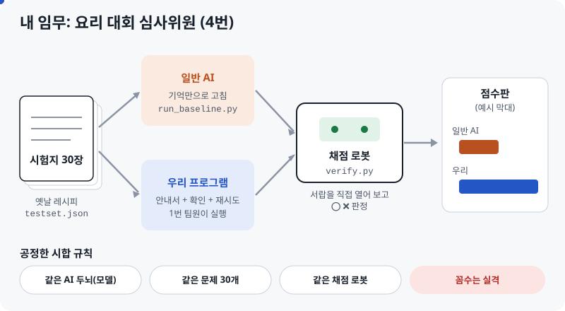
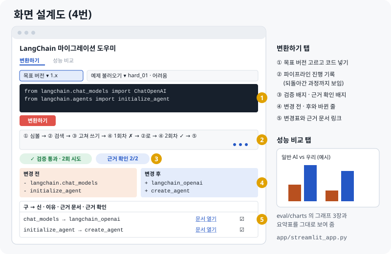
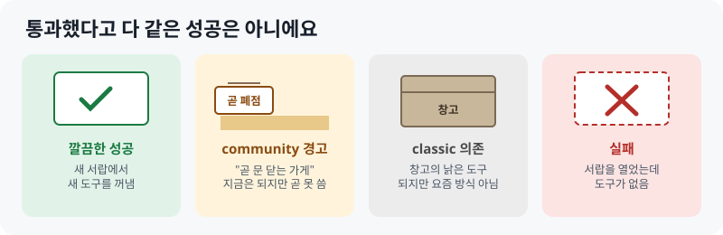

LANGCHAIN 마이그레이션 도우미 · 4번(화면 · 평가) 담당 안내서
화면·평가 파트
최신 버전 v2.1 · 2026-10-134번이 맡은 손님 테이블(화면)과 요리 대회 심사위원(평가) 일을 그림 중심으로 설명합니다. 보고서, README, 발표도 4번이 맡습니다.
이것 세 줄만 기억해도 됩니다
- 나는 손님 테이블(결과를 보여 주는 화면)과 심사위원(효과를 숫자로 증명하는 평가)입니다.
- 평가는 같은 문제 30개, 같은 채점 로봇으로 일반 AI와 우리 프로그램을 공정하게 비교합니다.
- 화면은 결과, 바뀐 줄, 근거 링크, 검증 배지를 한눈에 보여 주고, 발표 데모도 이 화면으로 합니다.
1장
역설계: 발표 장면에서 거꾸로
01 문서의 기본 설계는 프로그램이 일하는 순서였습니다. 역설계는 내가 일하는 순서를 정하는 방법입니다. 발표에서 보여 줄 장면을 먼저 정하고, 그러려면 무엇이 필요한지 거꾸로 내려갑니다.

아래 다섯 칸(자료 조사, 시험지, 채점 규칙, 채점 로봇, 화면 뼈대)은 이미 만들었습니다. 남은 것은 실험을 실행하고 결과를 화면과 발표에 채우는 일입니다.
2장
평가: 요리 대회 심사위원

| 파일 | 주방 비유 | 할 일 |
|---|---|---|
EVAL_RULES.md | 시합 규칙표 | 팀과 빈칸 채우기 (비교 모델, 최대 시도 2 또는 3회) |
testset.json | 시험지 30장 | 쉬움 · 중간 · 어려움 하나씩 왜 깨지는지 말로 설명해 보기 |
check_testset.py | 시험지 검사기 | 실행해서 "통과 30/30" 보기 |
verify.py | 채점 로봇 | 3번에게 넘겨 verifier (b)의 출발점으로 쓰게 하기 |
run_baseline.py | 상대 선수 시험 기계 | 일반 AI 30문제 실행 |
run_system.py | 우리 선수 시험 기계 | 30문제를 API로 돌리고 report를 평가 결과로 바꾸기 |
check_contract.py | 접시 모양 검사기 | 3번 report가 약속한 모양인지 확인 |
check_symbol_map.py | 이사 목록 검사기 | 2번 symbol_map이 진짜 맞는지, 시험지를 얼마나 덮는지 |
make_charts.py | 점수판 그리기 | 그래프 3장과 요약표 만들기 |
채점 로봇이 보는 것
① 문법이 맞는가 ② 서랍에서 도구를 꺼낼 수 있는가(import) ③ 그 도구의 기능 이름이 진짜 있는가(속성, 예: PromptTemplate.from_template) ④ 어려운 부분을 지워서 통과한 꼼수는 아닌가. ③은 팀 verifier (b)와 같은 기준이라, 없는 기능을 지어낸 코드도 잡습니다.
왜 AI에게 "맞아?"라고 묻지 않나요? 채점하는 AI도 옛날 주방만 기억하면 틀린 레시피에 합격을 줄 수 있습니다. 그래서 말이 아니라 서랍을 직접 열어서 채점합니다.
3장
화면: 손님 테이블

뼈대는 app/streamlit_app.py에 있습니다. 지금은 테스트셋으로 만든 가짜 응답으로 돌아갑니다. 맨 위에서 목표 버전(지금은 LangChain 1.x)을 고릅니다. 팀 그래프가 나오면 MIGRATION_FUNC="src.graph.supervisor:run_migration"으로 함수를 바로 부르고(기본안), HTTP로 부를 때는 MIGRATION_API_URL을 씁니다.
| report가 보내 줄 것 (3번과 약속) | 화면에서 보이는 곳 |
|---|---|
migrated_code 고친 코드 | ④ 변경 후, 바뀐 줄 |
changes 구 → 신, 이유, 근거 링크, 근거 확인 | ⑤ 변경표, 근거 확인 배지 |
verification 통과 여부, 실패 단계 | ③ 검증 배지 |
attempts, attempt_log 시도 횟수와 실패 이유 | ② 진행 기록, ③ "2회 시도" |
4장
따라 하기
PowerShell에 차례로 붙여 넣으면 됩니다.
# 0. 평가 폴더로 cd "C:\Users\playdata2\Desktop\skn35 report\langchain_migration\eval" # 1. 시험용 새 주방 만들기 (처음 한 번) uv venv verify-env --python 3.12 uv pip install --python verify-env/Scripts/python.exe langchain langchain-core langchain-openai langchain-community langchain-classic langgraph verify-env/Scripts/python.exe -m pip freeze > requirements-verify.txt # 2. 시험지 검사 python check_testset.py testset.json --py verify-env/Scripts/python.exe 통과: 30 / 30 # 3. 일반 AI 시험 (--mock 은 API 없이 흐름만 확인) $env:OPENAI_API_KEY="sk-...내 키..." python run_baseline.py --py verify-env/Scripts/python.exe --model [모델명] --limit 3 # 4. 화면 켜기 streamlit run ../app/streamlit_app.py # 5. 점수판 그리기 (결과가 나온 뒤) python make_charts.py --a results/A_[모델]_[날짜].json --b results/B_[모델]_[날짜].json
막히면 Claude에게
"eval 폴더에서 [명령어]를 실행했더니 이런 에러가 났어. [에러 전체] 쉽게 원인이랑 해결 방법 알려줘."
5장
결과 읽기


| 새로 보는 숫자 | 뜻 |
|---|---|
| 근거 일치율 | 적어 둔 안내서 쪽수 중 진짜 있던 비율. "문서 근거"가 지어낸 게 아님을 보여 줌 (우리 프로그램만) |
| 실패 원인 분포 | 어디서 막혔는지: import(경로 틀림), attribute(없는 기능 지어냄), syntax(문법) |
6장
팀원과 맞출 것
| 누구와 | 무엇을 | 왜 |
|---|---|---|
| 3번 | verify.py 넘기기 | 팀 verifier와 평가 채점이 같은 기준이어야 공정함 |
| 3번 | report 출력 모양 (합의안) | 화면이 그대로 보여 주고, 평가 결과도 여기서 계산 (run_system.py) |
| 1번 | 그래프를 부르는 방법 (합의안 1.1): 기본은 run_migration(code, target_version) 함수, HTTP는 선택 | 화면과 평가가 프로그램을 부르는 창구. 두 방법 모두 미리 연결해 둠 |
| 2번 | symbol_map 모양과 근거 ID 규칙 (합의안), 테스트셋 대조 | 이사 목록이 진짜 맞는지, 시험지 심볼을 얼마나 덮는지 확인 (check_symbol_map.py) |
7장
한계와 발표 질문
한계 (먼저 말하면 신뢰가 올라갑니다)
채점은 "도구를 꺼낼 수 있고, 그 기능 이름이 진짜 있다"까지입니다. 함수에 넣는 값이 틀리거나, 실행 결과가 맞는지는 확인하지 못합니다. 국자는 꺼냈고 국자에 손잡이도 있지만, 국을 제대로 떴는지는 모르는 것과 같습니다.
| 예상 질문 | 이렇게 답하세요 |
|---|---|
| import만 확인하나요? | "import와 함께 그 도구의 기능 이름이 진짜 있는지도 확인합니다. 다만 인자나 실행 결과까지는 못 봐서, 가짜 LLM으로 실제 실행하는 테스트가 다음 단계입니다." |
| 왜 AI에게 검증을 맡기지 않았나요? | "검증하는 AI도 같은 옛날 지식을 가질 수 있어서, 실제로 실행해서 확인했습니다." |
| 30개로 충분한가요? | "난이도별 경향을 보려는 목적입니다. 쉬움 · 중간 · 어려움을 10개씩 넣었습니다." |
| 근거를 지어낼 수도 있지 않나요? | "verifier가 근거 ID가 실제 검색 결과에 있는지 확인하고, 그 비율을 근거 일치율로 보고합니다." |
| 실무 가치는? | "버전 에러를 찾는 시간을 줄이고, 근거와 검증 결과를 화면에서 바로 확인할 수 있어 믿고 쓸 수 있습니다. 안내서와 검증 환경만 바꾸면 다른 라이브러리에도 쓸 수 있습니다." |
8장
확인 퀴즈
답을 누르면 바로 알려 줍니다.
9장
이번 주 체크리스트
체크한 내용은 이 브라우저에만 저장됩니다.